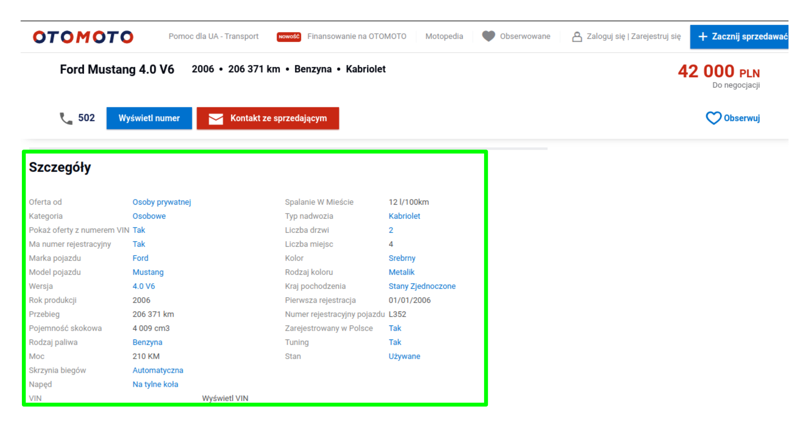
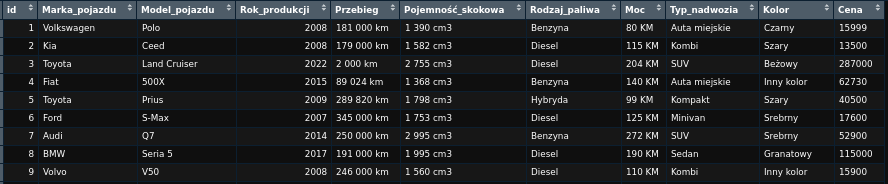

library(rvest)
library(dplyr)
library(readr)
library(tidyverse)Opis działania skryptu
Samochody osobwe z portalu otomoto.pl (Lublin +50km)
Powrót do dokumentacji
Bibilioteki użyte w skrypcie
Wybrane parametry samochodów osobowych
Tworzymy zmienne, które będą przychowywać wartości interesujących nas parametrów samochodów, przypisujemy im wartość pustą (NULL).
id <- ""
Marka_pojazdu <- ""
Model_pojazdu <- ""
Rok_produkcji <- ""
Przebieg <- ""
Pojemność_skokowa <- ""
Rodzaj_paliwa <- ""
Moc <- ""
Kolor <- ""
Typ_nadwozia <- ""
Cena <- ""Indeksowanie
Każdy wczytany samochód otrzyma dodatkową informację, będzie to jego indywidualny numer. Numer identyfikacyjny każdego kolejego samochodu będzię kolejną liczbą ze zbioru liczb naturalnych.
id_i <- 1Pętla “for”
Aby wczytać informację kolejnych samochodach, będziemy potrzebowali pętli, która będzie wczytywać kolejne podstrony z ogłoszeniami ze strony otomoto.pl.W naszym przypadku pobierzemy informacje z 110 podstron z ogłoszeniami.
for(j in 1:110){}Wnętrze pętli
Przerwa w działaniu skrypty
Aby uniknąć problemów związanych z łącznością z serverem na której znajdują się ogłoszenia, między kolejnymi iteracjami ustawiamy 3 sekundowe opóźnienie, przy pomocy funkcji Sys.sleep()
Sys.sleep(3)Wczytanie adresu strony
Zmiennej link przypisujemy adres \(j-tej\) podstrony z ogłoszeniami. Przy pomocy funkcji paste w linku będziemy ustawiać kolejne numery podstron. Zmiennej page przypisujemy zczytaną strukturę strony podanego adresu przy pomocy `rvest::read_html()``
link <- paste("https://www.otomoto.pl/osobowe/miasto_lublin?search%5Border%5D=created_at_first%3Adesc&search%5Bdist%5D=&page=",j,"&search%5Badvanced_search_expanded%5D=true",
sep="")
page = read_html(link)Pobieranie nazw samochodów z ogłoszeń
Korzystając z funkcji html_nodes() oraz znalezionych na stronie tagów (tagi udało się znaleźć przy pomocy wtyczki SelectorGadget oraz przeanalizowaniu kodu html strony), wyszukujemy nazwy samochodów osobowych. Użycie odpowiednich tagów pozwala nam na pobranie tylko i wyłącznie nazw samochodów, których linki przenoszą nas na podstrony otomoto.pl.
Na stronie jest też możliwość łączenia się z innimi stronami, min.: \(https://aaaautolublin.otomoto.pl\) lub \(https://peugeotpraseklublin.otomoto.pl\). Wyselekcjonowanie odpowiednich adresów zabezpieczy nas przed zbędnymi problemami.
name = page |>html_nodes(".e1b25f6f0 .er34gjf0 a")|>html_text2()Wczytanie adresów poszczególnych ogłoszeń
Pobraliśmy nazwy, a teraz potrzebujemy adresów stron poszczególnych ogłoszeń. Udaje się to zrobić przy pomocy funkcji html_attr("href").
links = page |> html_nodes(".e1b25f6f0 .er34gjf0 a") |> html_attr("href")Wczytywanie parametrów poszczególnych aut
Pętla for (nr.2)
Dla każdego ogłoszenia musimy pobrać intersujące nas parametry, znajdujemy je i wczytujemy z pobranych uwcześniej adresów. Pętla wykona się dokładnie tyle razy, ile samochodów udało nam się znaleźć na podstronie.
for(i in 1:length(links)){}Wczytanie strony z konkretnym ogłoszeniem
Pobieramy stronę \(i-tego\) samochodu z \(j-tej\) strony.
page <- read_html(links[i])Wczytywanie parametrów:
Cena
Na początku wczytamy parametr Cena, który znajduje się w nieco innnym położeniu na stronie od pozostałych. Pobrana wartość będzię typu string oraz oprócz liczby, zawierać będzie również znaki białe (“spacja”) oraz oznaczenie waluty “PLN”. Od razu po wczytaniu wartości, przekonwertujmy ją na zmienną typu liczbowego przy pomocy funkcji
prase_number(). Znaki białe oraz litery usuwamy za pomocą funkcjigsub().
cena = page |> html_nodes(".offer-price__number") |> html_text2()
cena <- parse_number(gsub(" ","",cena[1]))Nazwy wszystkich parametrów z ogłoszeń
Po wczytaniu ceny szukamy kolejnych interesujących nas parametrów. Pobieramy wszystkie dostępne i zapisujemy listę naz w zmiennej
parametry_nazwy.
parametry_nazwy <- page |>
html_nodes(".offer-params__label") |> html_text()Uzupełnienie listy nazw o parametr “Cena”
Listę z nazwami uzupelniamy o dodatkowy, interesujący nas parametr, którym jest Cena.
parametry_nazwy <- c(parametry_nazwy,"Cena") Wczytanie wartości wszystkich parametrów
Nazwy zostały wczytane, aczkolwiek potrzebujemy również wartości tych parametrów.
parametry <- page |>
html_nodes(".offer-params__value") |>
html_text2()Uzupełnienie listy o wartość parametru “Cena”
Podobnie jak powyżej, listę dopełniamy wartością ceny.
parametry <- c(parametry,cena)Ramka dlanych dla pojedynczego samochodu
Dla samochodu tworzymy ramkę danych przechowującą nazwy parametrów oraz ich wartości.
samochod <- data.frame(parametry_nazwy,parametry)Wyodrębienie interesujących nas 10 parametrów
W ramce
samochodznajdują się wszystkie informacje jakie sprzedający chciał opisać. Nie ma wymogu aby uzupełnić wszystkie możliwe parametry, a więc parametry będą się różnić zależnie od okłoszenia. Wybieramy tylko wyszczególnione na początku parametry, które analizować będziemy w przyszłości.
samochod <- samochod[
parametry_nazwy=="Marka pojazdu" |
parametry_nazwy=="Model pojazdu" |
parametry_nazwy=="Rok produkcji" |
parametry_nazwy=="Przebieg" |
parametry_nazwy=="Pojemność skokowa" |
parametry_nazwy=="Rodzaj paliwa" |
parametry_nazwy=="Moc" |
parametry_nazwy=="Typ nadwozia"|
parametry_nazwy=="Kolor"|
parametry_nazwy=="Cena"
,]Wektory poszczególnych parametrów dla wszystkich wczytanych aut
Pobrane parametny dołączamy do utwórzonych na początku wektorów.
id <- c(id,id_i)
Marka_pojazdu <- c(Marka_pojazdu,samochod$parametry[1])
Model_pojazdu <- c(Model_pojazdu,samochod$parametry[2])
Rok_produkcji <- c(Rok_produkcji,samochod$parametry[3])
Przebieg <- c(Przebieg,samochod$parametry[4])
Pojemność_skokowa <- c(Pojemność_skokowa,samochod$parametry[5])
Rodzaj_paliwa <- c(Rodzaj_paliwa,samochod$parametry[6])
Moc <- c(Moc,samochod$parametry[7])
Typ_nadwozia <- c(Typ_nadwozia,samochod$parametry[8])
Kolor <- c(Kolor,samochod$parametry[9])
Cena <- c(Cena,samochod$parametry[10])Inkrementacja numeru identyfikacyjnego
Zwiększamy numer identyfikacyjny pojazdu o 1.
id_i <- id_i+1W tym miejscu zamykają się obie pętle.
Ramka danych z parametrami samochodów
Utwórzmy teraz ramkę danych dla wszystkich pobranych samochodów.
Tworzenie ramki
Aby utworzyć ramkę używamy wartości utworzonych wcześniej wektorów.
samochody <- data.frame(
id <- id[-1],
Marka_pojazdu <- Marka_pojazdu[-1],
Model_pojazdu <- Model_pojazdu[-1],
Rok_produkcji <- Rok_produkcji[-1],
Przebieg<- Przebieg[-1],
Pojemność_skokowa<- Pojemność_skokowa[-1],
Rodzaj_paliwa<- Rodzaj_paliwa[-1],
Moc<- Moc[-1],
Typ_nadwozia<- Typ_nadwozia[-1],
Kolor<- Kolor[-1],
Cena<- Cena[-1],
stringsAsFactors = FALSE
) Zmiana nazw kolumn
Nazwijmy teraz kolumny zgodnie z nazwami parametrów.
colnames(samochody) <- c("id",
"Marka_pojazdu",
"Model_pojazdu",
"Rok_produkcji",
"Przebieg",
"Pojemność_skokowa",
"Rodzaj_paliwa",
"Moc",
"Typ_nadwozia",
"Kolor",
"Cena")Wynik
Otrzymana baza prezentuje się następująco:

Zapis do pliku CSV
Utworzoną ramkę danych eksportujemy do pliku CSV.
write.csv(samochody,
file = "ścieżka",
row.names = FALSE)